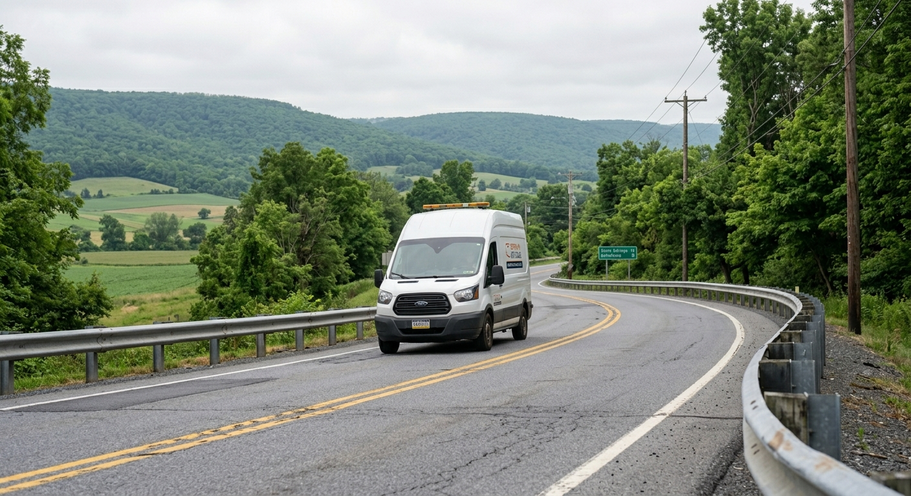

Professional windshield repair, replacement, and mobile auto glass service throughout State College and Centre County, Pennsylvania.
Our Services
If you're searching for "auto glass repair near me" in State College, you've found Central PA's trusted auto glass experts. We specialize in windshield repair, replacement, and mobile service throughout Centre County and surrounding areas.
Quick chip and crack repair to stop damage from spreading. Most repairs completed in under 30 minutes.
Complete windshield replacement with OEM-quality glass and lifetime warranty included.
We come to you at home, work, or campus. Mobile service throughout Centre County and State College.
Fully equipped mobile auto glass unit. Most repairs completed in under an hour at your location.

FAQ
Windshield repair starts at $75, and full replacement starts from $250 depending on your vehicle. Most insurance claims have $0 deductible for glass repair in Pennsylvania. We work with all insurance providers and handle all paperwork for you.
Yes! Our mobile service covers all of Centre County including State College and the Penn State campus area. Whether you're at home, work, or on campus, we'll come to your location to complete the repair or replacement. Most services take under an hour.
In Pennsylvania, comprehensive insurance typically covers auto glass repair with no deductible. Pennsylvania law requires insurance companies to waive the deductible for windshield repair. We'll handle all insurance paperwork and bill directly — you pay nothing out of pocket in most cases.
Standard windshield replacement takes 60-90 minutes. After installation, we recommend waiting 1 hour before driving. We offer same-day appointments and mobile service throughout State College and Centre County.
Free estimates for all auto glass services in State College and Centre County. No obligation, no pressure.
📞 814-201-7769